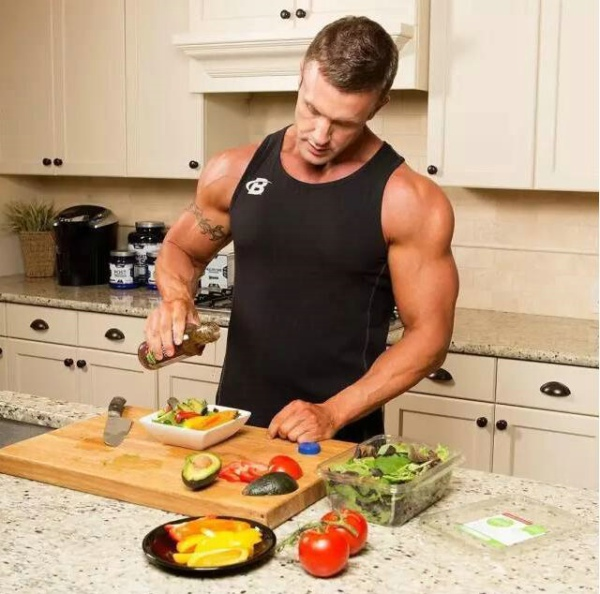

健身营养学
基本介绍编辑营养是指人体从外部环境摄取、消化、吸收与利用食物和养料的综合过程。运动营养学研究运动员在不同训练和比赛情况下的营养需要、营养因素与机体功能、运动能力、体力适应以及防治运动性疾病的关系，从而提高运动能力。是运动医学的重要组成部分之一，它与运动生物化学、运动生理学、运动训练学、运动生物力学、运动员选材学、病理学、临床医学、营养与食品卫生学、食品化学、中医养生学、烹饪学等有着密不可分的确良联系。 合理营养有助于提高运动能力和促进运动后机体的恢复，合理营养支持运动训练，是运动员保持良好健康和运动能力的物质基础，对运动员的机能状态、体力适应、运动后机体的恢复和伤病防治均有良好的效果。合理营养为运动员提供适宜的能量；合理营养有助于剧烈运动后机体的恢复；合理营养可延缓运动性疲劳的发生或减轻其程度；合理营养有利于解决运动训练中的一些特殊医学问题（不同体育项目、不同环境、不同年龄期的特殊医学要求）；合理的营养可保障肌纤维中能源物质（糖原）的水平稳定，减少运动性创伤的发生率。 营养成分编辑 如果你运动量比较大，则需要及时补充下面的物质： 水 运动会使你出很多汗，大量的水分也会从你的呼吸中带走，运动一个小时就会使你丢失1000-2000毫升水分，所以及时地补充水分是非常重要的，最好在运动前喝2大杯水，如果条件允许，可以每隔10分钟就喝一点水。 钾 激烈的运动使你汗流浃背，很多矿物质会随着汗水丢失，主要是钾和钠，身体中存储着大量的钠，而且钠也很容易从食物中得到补充；钾元素在体内含量比较少，运动后需要注意选择诸如香蕉、桔子等含有丰富钾元素的食品进行补充。 锌 锌是另一个可从汗液和尿液当中流失的元素，锌对于健康非常重要，身体内需要保证有足够的锌。牡蛎、牛奶、羊肉等食物含有较多的锌，也可服用含有锌的复合维生素片来补充锌。 铬 铬能够促使身体消耗脂肪，协助身体调节血糖，充足的铬能够提高你的锻炼效果，然而大多数人铬的摄入量都不足。下面的食物含有较多的铬元素：葡萄、蘑菇、花椰菜、苹果、花生等，如果不能进食足够的富含铬的食物，就需要通过铬胶囊来补充铬。 维生素B2 运动需要消耗大量的能量，维生素B2可以帮助人体利用从食物中得来的能量，运动量越大，需要的维生素B2就越多。不过年龄较大的人普遍缺乏维生素B2，所以如果你经常运动就应当通过牛奶、绿色蔬菜、牛肉等食品来补充维生素B2，当然也可以用复合维生素片来补充维生素B2。 维生素E 运动不仅要消耗大量的能量，而且会需要很多的氧。大量的氧在身体内会促使自由基的产生，对身体造成多方面的损害，维生素E可以阻止这种破坏的发生，并且还可以防止运动后的肌肉的酸痛。然而通过日常饮食，我们很难获得足够的维生素E，所以每天服用800国际单位的维生素E胶囊对于爱好运动的人来说是非常重要的。 起源产生编辑 运动营养学是营养学的一个分支，是营养学在体育实践中的应用，所以有人将运动营养学视为应用营养学或特殊营养学。 我国著名运动营养学家陈吉棣教授认为运动营养学是研究运动员在不同的训练或比赛情况下的营养需要、营养因素和机体机能，运动能力、体力适应和恢复以及与运动性疾病防治关系的科学。它是研究内容十分广泛的一门学科，其研究目的是为运动员适应运动强度供给能量提供理论依据，为运动员延迟疲劳和加快恢复，提高训练效果和竞技水平提供合理膳食结构计划。营养是恢复的最有效手段之一，合理的营养可以显著提高运动员的机能状况。相反，营养不合理，将会导致机体生理功能紊乱，运动能力下降，甚至产生疾病和创伤。 由于运动营养补充对运动能力和水平的重要性愈来愈被人们认识,所以从20世纪80年代以来，各体育院校和高校体育院（系）都相继开设了运动营养学课程。运动营养专业人员的队伍也在不断壮大。 二十多年来，我国竞技水平迅速提高，在世界各大赛中取得优异成绩。运动营养知识和方法手段的运用与指导起到了不可替代的作用。随着社会的进步和体育事业的蓬勃发展，运动营养学必将取得更大的发展，为指导社会文明、促进人民健康、提高国民素质做出更大的贡献。上述这些表述是主要针对专业运动人群的。 关系详解编辑 运动与健康 （1） 运动可以改善心肺功能。 （2） 运动可以增强肌肉和骨骼的功能。 （3） 运动可改善血压。 （4） 运动可提高机体免疫力。 （5） 运动可使人的体态更健美。 （6） 运动可健脑。 （7） 运动可消除疲劳。 （8） 运动可促进心理健康。 [3] 运动与营养 （1）合理的营养提供运动适宜的能源物质 （2）有助于剧烈运动后的恢复 （3）可减轻运动性疲劳的程度或延缓其发生 （4）引起人体运动能力下降的常见原因如脱水、体温调节障碍引起的体温升高、酸性代谢产物的蓄积、电解质平衡失调所致的代谢紊乱、能源储备物的损耗等均可在合理营养的措施下（如适宜的饮食营养和补液等）延缓疲劳的发生或减轻程度。 （5）合理营养有助于解决运动训练中的一些特殊医学问题，如减体重；生长发育时期的运动员、妇女、老年人、患有不同疾病的人参加体育运动时，均面临的不同的生理问题，需要特殊的营养调控，以保证练习效果及身体健康。 运动员膳食 一般项目运动员蛋白质的发热量占总热量的15%(12～18%)，脂肪占30%(25～35%)，糖类占55%(45～60%)。食物要选用浓缩、发热量高、体积重量小、多样化的，肉、鱼、奶、蛋、蔬菜、水果、谷类、豆制品等要合理搭配。 运动员的热能代谢具有强度大和伴有氧债等特点。 运动员的基础代谢同正常人无显著差别，一般可按男 1卡/每分，女0.8卡/每分计算。运动时的热能代谢,取决于运动的强度、密度和持续时间。调查资料表明，集训队运动员训练课的热能消耗量多在1000卡以上(540～2640卡),为 1日总消耗的20～64%，每小时的热能消耗量多在400卡左右(148～824卡)。不同项目运动员集训时，1日总的热能需要量差异范围较大,多数在3500～4400卡，按体重计算为60卡/公斤左右（44～82卡/公斤）。 运动员膳食依据：运动员膳食营养素日供给量（RDA）和各种营养素安全摄入上限（UL）。运动员的能量供给是影响运动能力的最直接因素。一些有关能量代谢的研究技术多采用同位素双标记水法，其结果与膳食调查的能量摄入值有一定的差距。 